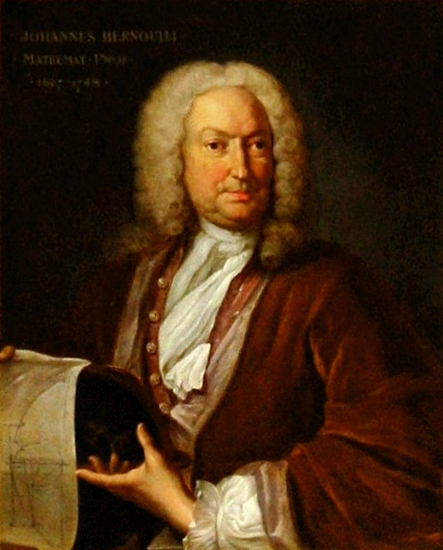
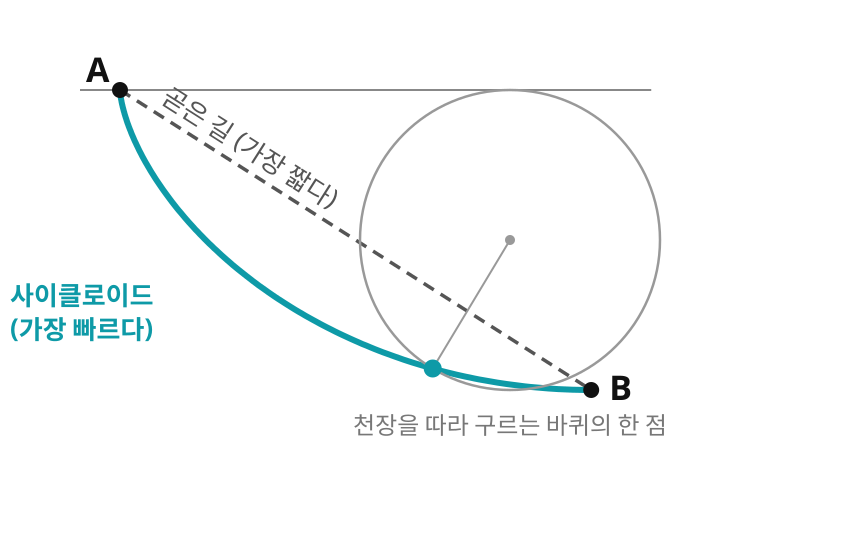
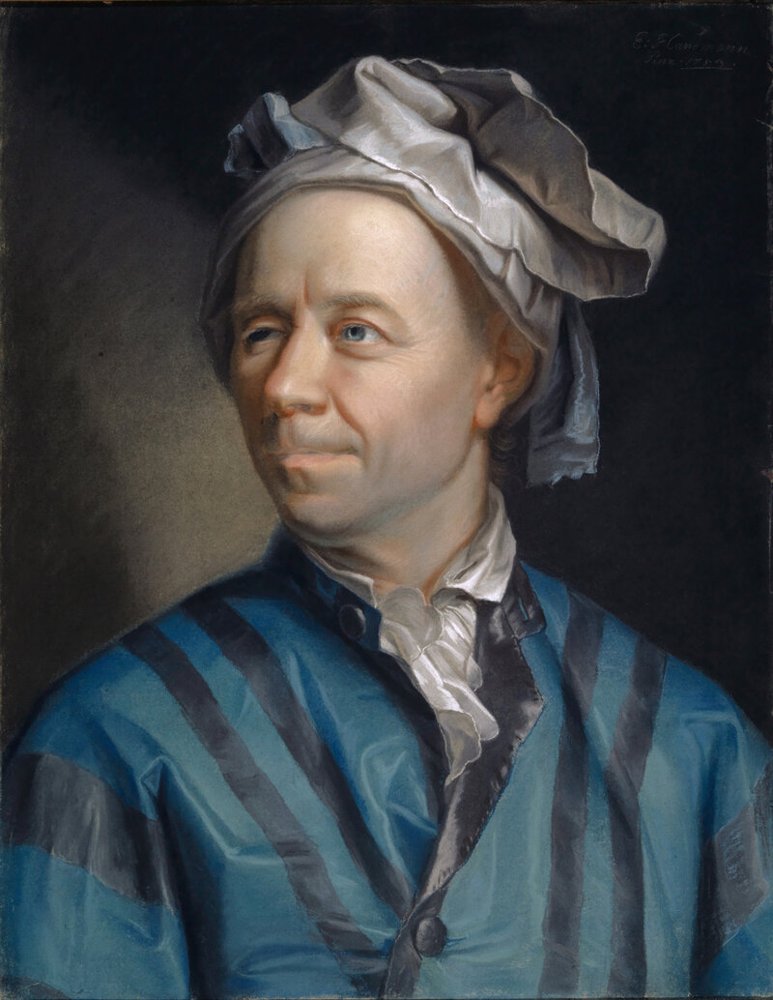
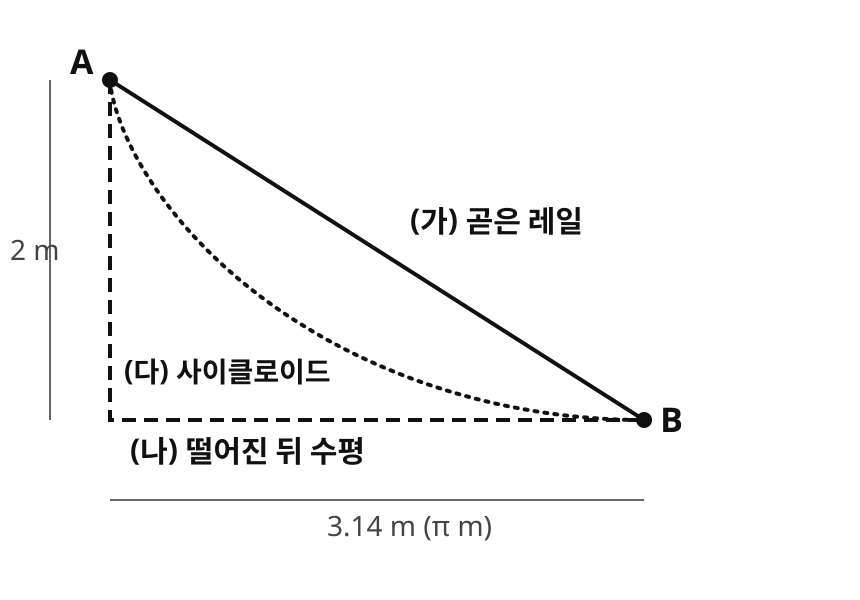

지금까지는 평면 직선의 둘째 성질, "가속도 0"만 곡면으로 가져왔다. 첫째 성질인 "최단경로"는 어떻게 될까? 출발 문제의 비행기가 따라가는 대원은 가장 짧은 길이면서, 동시에 측지선이기도 했다. 우연일까?
"가속도 0"은 곡선 위의 한 점 한 점에서 확인하는 조건이었다. "가장 짧다"는 다르다. 곡선 하나를 통째로 놓고, 같은 두 점을 잇는 다른 모든 곡선과 길이를 견줘야 한다. 숫자 하나가 아니라 곡선 전체를 놓고 가장 좋은 것을 고르는 이런 물음은, 17세기 말의 도전장 하나로 수학자들의 한가운데에 놓이게 되었다.
역사: 요한 베르누이 (Johann Bernoulli, 1667–1748)

1696년 6월, 요한 베르누이는 학술지 『악타 에루디토룸(Acta Eruditorum)』에 유럽의 수학자들에게 보내는 도전장을 실었다. 수직으로 선 평면 위에 두 점 A, B가 있을 때, 중력만 받는 물체가 A에서 출발해 B에 가장 짧은 시간에 닿는 곡선은 무엇인가? 이것이 최속강하선(brachistochrone, 그리스어로 「가장 짧은 시간」) 문제다.
가장 짧은 길을 묻는 것이 아니었다. 곧은 길은 가장 짧지만 기울기가 완만해 속력이 늦게 붙는다. 처음에 가파르게 떨어져 속력을 얻은 뒤 완만하게 가는 편이 더 빠를 수 있다. 베르누이는 이미 답을 가지고 있었다. 천장을 따라 구르는 바퀴 테두리의 한 점이 그리는 곡선, 곧 사이클로이드다.

최속강하선. A에서 B로 가는 곧은 길(점선)은 가장 짧고, 사이클로이드(청록 곡선)는 가장 빠르다. 사이클로이드는 천장을 따라 구르는 바퀴 테두리의 한 점이 그리는 곡선이다
그가 답을 얻은 길이 흥미롭다. 빛은 가장 짧은 시간이 걸리는 길로 가고(페르마의 원리), 속력이 다른 물질로 들어갈 때마다 굴절 법칙에 따라 꺾인다. 베르누이는 떨어지는 물체를, 아래로 갈수록 빨라지는 얇은 층들을 차례로 지나며 꺾이는 빛으로 보고 층마다 굴절 법칙을 적용했다. 역학 문제를 빛의 문제로 옮겨 푼 것이다.
처음 기한은 여섯 달이었지만 라이프니츠의 권유로 이듬해 부활절까지 늘었다. 형 야코프 베르누이, 라이프니츠, 로피탈, 그리고 뉴턴 등이 풀이를 보냈다. 뉴턴은 1697년 1월 조폐국 일을 마치고 돌아와 문제를 받은 날 밤새 풀었고, 풀이는 이름 없이 실렸다. 베르누이가 그 풀이를 보고 「발톱 자국으로 사자를 알아보듯」 뉴턴의 것임을 알아챘다는 이야기가 전해진다. 형 야코프의 풀이 방법은 뒤에 오일러가 다듬은 방법의 씨앗이 되었다.
역사: 레온하르트 오일러 (Leonhard Euler, 1707–1783)

최속강하선 문제는 전혀 새로운 유형의 물음을 열었다. 숫자가 아니라 곡선, 곧 함수를 놓고 가장 좋은 것을 고르는 물음이다. 베르누이 형제의 풀이는 문제마다 따로 낸 꾀였다. 오일러는 1733년 무렵부터 이런 문제들을 붙들었고, 1744년 책 『곡선을 구하는 방법(Methodus inveniendi lineas curvas)』에서 넓은 부류의 문제를 한 가지 방법으로 다뤘다. 핵심 결과는, 곡선마다 매긴 값(길이, 걸리는 시간)을 가장 작게 하는 곡선은 어떤 미분방정식을 만족해야 한다는 것이다. 다만 그의 방법은 절반쯤 기하학적이어서, 곡선을 그림으로 따라가며 셈해야 했다.
1755년 8월, 열아홉 살의 라그랑주가 오일러에게 편지를 보냈다. 그림에 기대지 않고 미적분 규칙만으로 셈하는 순전히 해석적인 방법이었다. 오일러는 9월 답장에서 이 새 생각에 감탄했고, 자기의 반쯤 기하학적인 방법을 내려놓고 라그랑주의 방법을 택했다. 그리고 1756년 강의에서 이 분야에 「변분법(calculus of variations)」이라는 이름을 붙였다. 오늘날 그 미분방정식은 두 사람의 이름을 따 오일러-라그랑주 방정식이라 부른다.
이것이 측지선과 무슨 관계인가? "곡면 위에서 두 점 사이의 가장 짧은 길을 구하라"는 물음도 곡선마다 길이라는 값을 매기고 가장 작은 것을 고르는 물음이다. "가장 빠른 미끄럼 경로가 무엇인가?"라는 물리학적 호기심이 "휘어진 공간 위의 직선이 무엇인가?"라는 기하학의 물음을 푸는 도구를 낳은 셈이다.
변분법 (곡선 통째로 고르기 / Calculus of Variations) — 곡선(함수) 하나마다 숫자 하나(길이, 걸리는 시간, 에너지)를 매기는 규칙(범함수)이 있을 때, 그 숫자를 가장 작게 또는 가장 크게 하는 곡선을 찾는 방법. 곡선을 조금 흔들어도 그 숫자가 달라지지 않을 조건이 오일러-라그랑주 방정식이라는 미분방정식이 된다.
길이 대신 에너지를 줄인다
경로의 길이 ∫gijγ˙iγ˙jdt는 제곱근이 있어 다루기 까다롭다. 그래서 보통은 제곱근을 걷어 낸 “에너지”, 곧 속력의 제곱을 시간에 대해 더한 값의 절반을 대신 줄인다. 평면에서 1초 동안 가는 세 가지 방법을 비교해 보자.
가는 방법
길이
에너지
곧은 길, 속력 1로 고르게
1
0.5
곧은 길, 앞 0.5초는 속력 1.5, 뒤 0.5초는 속력 0.5
1
0.625
돌아가는 길, 속력 1.2로 고르게
1.2
0.72
길이는 얼마나 빨리 달리든 같지만(첫째·둘째 줄), 에너지는 속력이 고르지 않으면 커진다. 속력이 고르면 에너지는 (길이)²의 절반이라 짧은 길일수록 작다(첫째·셋째 줄). 그래서 에너지가 가장 작은 경로는 등속으로 달리는 가장 짧은 경로다.
이 에너지를 가장 작게 하는 곡선은 무엇을 만족할까? 오일러-라그랑주 방정식은 좌표 하나마다 이렇게 말한다. 적분 안의 식을 그 좌표의 속도로 미분한 다음 시각으로 미분한 값이, 적분 안의 식을 그 좌표 자체로 미분한 값과 같아야 한다.
곧은 걸음을 극좌표로 읽었던 평면에서 해 보자. 평면에서 직선 x=1 위를 속력 1로 걸으면(시각 t에 위치 (1,t)), 극좌표로는 반지름 좌표가 r=1+t2로 가속하는 것처럼 보였다. 극좌표에서 속력의 제곱은 r˙2+r2θ˙2이므로 적분 안의 식은 그 절반이다. r에 대해 따져 보면, 속도 r˙로 미분하면 r˙이고 이것을 시각으로 미분하면 r¨이다. r 자체로 미분하면 rθ˙2이다. 둘이 같아야 하므로 다음 식을 얻는다.
이것은 측지선 방정식 절에서 표로 확인한 「좌표 가속도 + 격자 보정 = 0」 그대로다. 거기서 극좌표의 크리스토펠 기호는 Γθθr=−r이었고, 보정 항 Γθθrθ˙2=−rθ˙2이 바로 위 식의 둘째 항이다. 곧은 걸음에 넣으면 시각 0에서 1−1=0, 시각 1에서 0.354−0.354=0으로 그때의 표와 같은 숫자가 나온다. 에너지를 가장 작게 하려는 조건에서 핸들을 꺾지 않는다는 조건과 똑같은 식이 나왔다. 일반 곡면에서도 같은 계산을 하면 측지선 방정식이 나오고, 이때 계량의 미분을 모은 계수가 크리스토펠 기호다. θ 쪽 식은 아래 문제 6에서 세워 보자.
두 조건이 한 방정식으로
두 조건은 같은 방정식으로 모인다. 등속으로 달리는 곡선에서 "길이가 가까운 경로들 중 극값"이라는 조건과 "가속도 0"이라는 조건이 똑같은 미분방정식이 된다. 그 곡선이 바로 측지선이다. 그래서 측지선은 짧은 구간에서는 거리를 최소화한다. 구면에서는 대원이고, 원기둥에서는 모선과 수평 원, 그리고 나선이며, 평면에서는 당연히 직선이다. 여기서 "가속도 0"은 레비-치비타 접속으로 잰다. 접속(이웃한 점의 벡터를 비교하는 규칙) 가운데, 화살표를 옮겨도 길이와 각이 바뀌지 않도록 계량에 맞춰 하나로 정한 것이다.
그렇다면 측지선은 얼마나 멀리 가도 가장 짧은 길일까? 두 조건이 만난 것은 "가까운 경로들 중"이라는 단서가 붙은 이야기였다. 이 단서가 어디까지 통하는지는 한 점에서 여러 측지선을 한꺼번에 쏘아 보낼 때 드러난다.
곁글 · 같은 것을 두 가지로 정의해 보고, 둘이 만나는지 따진다
한 대상을 전혀 다른 두 길로 정의해 보는 일은 수고를 두 번 하는 것처럼 보인다. 그런데 모양이 다른 두 정의가 같은 것을 가리킨다는 것이 밝혀지면, 그 개념이 어느 한 정의의 우연한 꼴이 아니라는 믿음이 생긴다. 한쪽에서 어려운 계산을 다른 쪽에서 쉽게 할 수도 있다. 두 정의가 어디서 갈라지는지를 찾아내면 그것도 수확이다.
1936년, 「기계적으로 계산할 수 있는 함수」가 무엇인지를 두고 두 정의가 거의 함께 나왔다. 앨런 처치는 함수를 만들고 적용하는 규칙만으로 된 체계(람다 계산)로 정의했고, 앨런 튜링은 네모 눈금이 줄지어 그려진 테이프를 읽고 쓰며 한 눈금씩 움직이는 가상의 기계로 정의했다. 튜링은 논문의 부록에서 두 정의가 정확히 같은 함수들을 가리킨다는 것을 보였다. 처치는 튜링의 정의가 「계산할 수 있다」는 일상의 뜻과 맞는다는 것을 곧바로 분명하게 해 준다고 평했다. 겉모습이 전혀 다른 두 정의가 만났다는 사실이, 둘이 붙잡은 것이 진짜 개념이라는 가장 강한 근거가 되었다.
양자역학도 같은 길을 걸었다. 1925년 하이젠베르크는 보른, 요르단과 함께 관측되는 양을 행렬로 다루는 행렬역학을 세웠고, 1926년 슈뢰딩거는 파동 방정식으로 된 파동역학을 내놓았다. 하나는 낯선 행렬 셈, 하나는 익숙한 미분방정식이라 전혀 다른 이론처럼 보였다. 슈뢰딩거는 같은 해에 두 이론이 수학적으로 같다는 것을 보였고, 그 뒤로 물리학자들은 문제마다 계산이 쉬운 쪽을 골라 쓴다.
측지선도 이 짝이다. 「핸들을 꺾지 않는 길」과 「가장 짧은 길」은 한 방정식으로 만났다. 그리고 둘이 어디서부터 갈라지는지를 찾는 것이 다음 물음이 된다.
문제 5 — 미끄럼 레일 세 개
계산 출발점 A에서 도착점 B까지 구슬이 미끄러져 내려가는 레일이 셋 있다. B는 A보다 2 m 낮고 가로로 3.14 m(π m) 떨어져 있다. (가) 곧은 레일 (나) 2 m를 곧장 떨어진 뒤 수평으로 달리는 레일(꺾이는 곳에서 속력을 잃지 않는다고 하자) (다) 사이클로이드 레일. 마찰과 공기 저항은 없고, 중력가속도는 9.8 m/s²이다. (다)는 약 1.00초가 걸린다. (가)와 (나)는 각각 몇 초가 걸리는가? 가장 짧은 레일이 가장 빠른가?

문제 5의 세 레일. (가) 곧은 레일 (나) 곧장 떨어진 뒤 수평으로 달리는 레일 (다) 사이클로이드 레일. B는 A보다 2 m 낮고 가로로 π m 떨어져 있다
같이 풀기 세션 5
김민준
곧은 레일은 길이가 π2+22≈3.72 m예요. 거리 =21gt2로 풀면 t=2×3.72/9.8≈0.87초. 사이클로이드 1.00초보다 빠르네요. 역시 가장 짧은 길이 가장 빨라요.
선생님
그럼 베르누이가 답을 틀렸다는 건데요. 같은 식으로, 레일을 거의 수평으로 눕히면 시간이 어떻게 나와요?
김민준
거의 수평이면 구슬이 거의 안 움직일 텐데… 제 식에는 기울기가 안 들어가요. 아, 비탈에서는 g를 통째로 쓰면 안 되고 레일 방향 몫만 써야 하네요. 기울기의 사인이 2/3.72니까 가속도는 9.8×0.537≈5.26 m/s², 그러면 t=2×3.72/5.26≈1.19초예요.
이서연
(나)는 2 m를 떨어지는 데 2×2/9.8≈0.64초, 그때 속력이 2×9.8×2≈6.26 m/s라 수평 3.14 m는 약 0.50초. 합쳐서 1.14초야. 길이는 5.14 m로 셋 중에 가장 긴데 곧은 레일보다 빨라.
선생님
그래요. 가장 짧은 곧은 레일이 셋 중 가장 느렸어요. 무엇을 가장 작게 할지 바꾸면 이기는 곡선도 바뀌어요.
김민준
곡선마다 길이를 매기면 곧은 레일이 이기고, 걸리는 시간을 매기면 사이클로이드가 이기는 거네요. 곡선에 숫자를 매기는 규칙이 답을 정하는 거였어요.
김민준
과제 채점 기준이 "코드 줄 수"일 때와 "실행 시간"일 때 1등 코드가 달랐던 거랑 같아요.
문제 6 — 극좌표의 각도 쪽 식
계산 평면 극좌표에서 에너지의 적분 안의 식은 21(r˙2+r2θ˙2)이다. (가) θ에 대한 오일러-라그랑주 방정식을 세워 θ¨+(보정항)=0 꼴로 고쳐 쓰고, 보정 항에서 크리스토펠 기호 Γrθθ를 읽어라. (나) 직선 x=1 위를 속력 1로 걷는 걸음(시각 t에 위치 (1,t))의 t=1에서 두 항을 계산해 합이 0인지 확인하라.